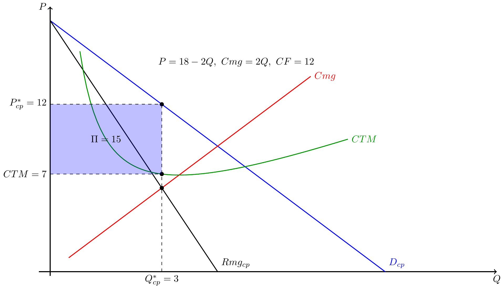
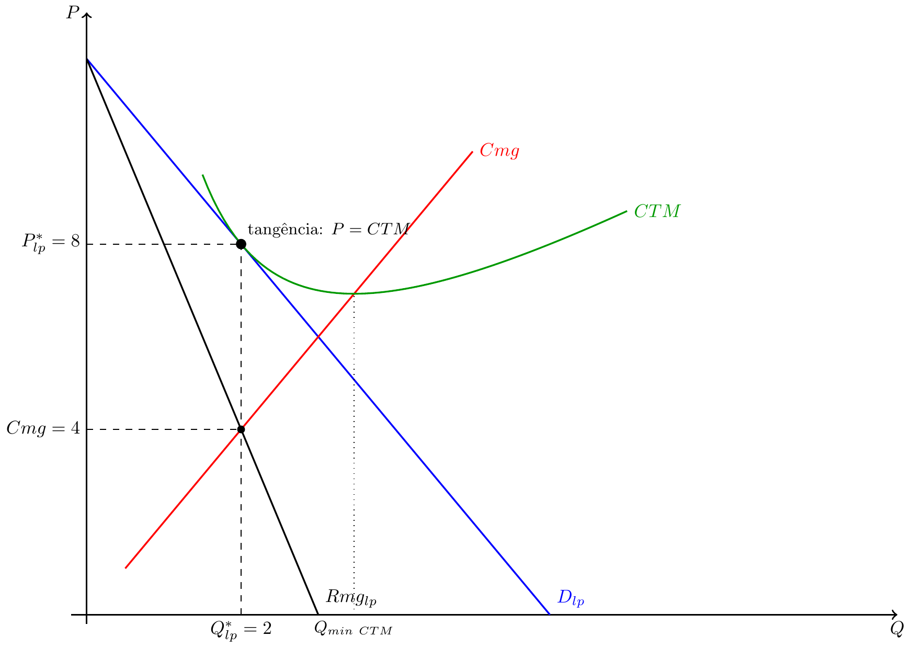

Microeconomia
Aula 21 — Concorrência Monopolística
1 O que é a Concorrência Monopolística?
1.1 Características Definidoras
A concorrência monopolística combina elementos dos dois modelos extremos:
- Muitas empresas — como em concorrência perfeita; nenhuma domina o mercado
- Diferenciação de produto — cada empresa oferece uma variante distinta; os produtos são substitutos próximos mas não perfeitos
- Entrada e saída livres — sem barreiras estruturais à entrada
- Poder de mercado limitado — a diferenciação confere algum poder, mas a concorrência de substitutos limita-o
. . .
Note
A diferenciação significa que cada empresa enfrenta uma curva de procura com inclinação negativa — ao contrário da empresa em CP que enfrenta procura horizontal.
1.2 Exemplos Reais
- Restaurantes — servem refeições (substitutos próximos), mas cada um tem cozinha, ambiente e localização distintos
- Marcas de roupa — t-shirts de diferentes marcas satisfazem a mesma necessidade, mas diferem em estilo e imagem
- Aplicações móveis — editores de texto, apps de fitness, jogos casuais: muitas opções, cada uma ligeiramente diferente
- Cabeleireiros, ginásios, cafés — serviços standardizáveis mas com forte componente local e identitária
. . .
Tip
O ponto-chave: os consumidores valorizam a variedade. A diferenciação não é artificial \(\rightarrow\) responde a preferências heterogéneas.
1.3 Posição no Espectro de Mercados
| Conc. Perfeita | Conc. Monop. | Oligopólio | Monopólio | |
|---|---|---|---|---|
| N.º empresas | Muitas | Muitas | Poucas | Uma |
| Produto | Homogéneo | Diferenciado | Homo/Difer. | Único |
| Entrada | Livre | Livre | Barreiras | Bloqueada |
| Curva D | Horizontal | Decrescente | Decrescente | Decrescente |
| \(P\) vs \(Cmg\) | \(P=Cmg\) | \(P>Cmg\) | \(P>Cmg\) | \(P>Cmg\) |
| Lucro LP | Zero | Zero | Positivo | Positivo |
2 Curto Prazo
2.1 Comportamento no Curto Prazo
No curto prazo, o número de empresas está fixo. A empresa comporta-se como um monopolista sobre a sua variante:
- Enfrenta uma curva de procura com inclinação negativa
- Calcula \(Rmg\) e iguala a \(Cmg\)
- Pode obter lucro económico positivo
. . .
A condição de optimização é exactamente a mesma que no monopólio:
\[Rmg = Cmg \quad \Rightarrow \quad Q^*_{cp},\ P^*_{cp}\]
. . .
Com \(P^*_{cp} > CTM(Q^*_{cp})\), o lucro é positivo: \(\Pi_{cp} > 0\).
2.2 Equilíbrio de Curto Prazo: Gráfico
2.3 Leitura do Gráfico de Curto Prazo
- \(Rmg = Cmg\): \(18 - 4Q = 2Q \Rightarrow Q^*_{cp} = 3\)
- Preço na curva de procura: \(P^*_{cp} = 18 - 2(3) = 12\)
- Custo médio: \(CTM(3) = 3 + 12/3 = 7\)
- Lucro: \(\Pi = (12 - 7) \times 3 = 15 > 0\)
. . .
Important
O lucro positivo (\(\Pi = 15\)) é um sinal de mercado: novas empresas têm incentivo a entrar com produtos diferenciados. Este processo leva ao equilíbrio de longo prazo.
3 Longo Prazo
3.1 O Mecanismo de Entrada
Com lucros positivos no curto prazo, novas empresas entram no mercado com produtos diferenciados. O que acontece?
- Os consumidores distribuem-se por mais variantes
- A procura que cada empresa enfrenta desloca-se para a esquerda (menor quantidade para cada preço)
- Também se torna mais elástica (mais substitutos disponíveis)
- Os lucros de cada empresa diminuem
. . .
O processo continua até que o lucro económico seja nulo: \(\Pi = 0\).
. . .
Note
Tal como em concorrência perfeita, a entrada livre elimina os lucros no longo prazo. A diferença está na forma como esse equilíbrio é atingido.
3.2 Condição de Equilíbrio de Longo Prazo
Em LP, duas condições são satisfeitas simultaneamente:
. . .
1. Optimização: a empresa maximiza o lucro dado que enfrenta curva D com inclinação negativa: \[Rmg = Cmg\]
. . .
2. Lucro nulo: a entrada eliminou todos os lucros extraordinários: \[P = CTM\]
. . .
Estas duas condições implicam que a curva de procura é tangente à curva CTM no ponto de equilíbrio.
3.3 Equilíbrio de Longo Prazo — Gráfico

3.4 Leitura do Gráfico de Longo Prazo
- \(Rmg = Cmg\): \(12 - 4Q = 2Q \Rightarrow Q^*_{lp} = 2\)
- Preço: \(P^*_{lp} = 12 - 2(2) = 8\)
- \(CTM(2) = 2 + 12/2 = 8\) — tangência confirmada: \(P = CTM\) ✓
- Lucro: \(\Pi = (8-8) \times 2 = 0\) ✓
- \(Cmg(2) = 4 < P = 8\) — ineficiência persiste ✓
. . .
Important
Mesmo com lucro zero, \(P > Cmg\): o equilíbrio de longo prazo não é eficiente. Esta é a ineficiência residual da concorrência monopolística.
4 Ineficiências Residuais
4.1 Duas Ineficiências no Equilíbrio de LP
1. \(P > Cmg\) — Ineficiência alocativa
- Em CP: \(P = Cmg\) — todas as unidades mutuamente vantajosas são produzidas
- Em conc. monop. LP: \(P = 8 > Cmg = 4\) — há unidades que não se produzem, apesar de a disposição a pagar superar o custo
. . .
2. Excesso de capacidade — Ineficiência produtiva
- A empresa produz \(Q^*_{lp} = 2\)
- O mínimo de \(CTM\) ocorre em \(Q \approx 3.46\)
- Cada empresa opera abaixo da escala mínima eficiente
. . .
Note
Em CP perfeita, no LP cada empresa produz no mínimo de \(CTM\). Em conc. monopolística, a tangência ocorre na parte decrescente do CTM — sempre à esquerda do mínimo.
4.2 O Trade-off: Variedade vs. Ineficiência
A concorrência monopolística é ineficiente — mas isso é necessariamente mau?
. . .
Argumentos contra (custo da diferenciação):
- Excesso de capacidade: recursos não usados na escala eficiente
- \(P > Cmg\): transacções mutuamente vantajosas não realizadas
- “Demasiados” produtos semelhantes no mercado
. . .
Argumentos a favor (benefício da variedade):
- Os consumidores valorizam a variedade — não é indiferente ter só um produto homogéneo
- A diferenciação pode reflectir inovação e qualidade
- O excedente do consumidor derivado da variedade pode compensar a ineficiência
. . .
Tip
Não há uma resposta única. O juízo depende do quanto os consumidores valorizam a diversidade face ao ganho de eficiência de ter menos variantes a menor custo.
5 Exercícios
5.1 Exercício 1 — Escolha Múltipla
No equilíbrio de longo prazo de uma empresa em concorrência monopolística, é verdade que:
- \(P = Cmg\) e \(\Pi = 0\)
- \(P = CTM\) e \(P = Cmg\)
- \(P = CTM\) e \(P > Cmg\)
- \(P > CTM\) e \(\Pi > 0\)
5.2 Solução — Exercício 1
No LP da conc. monopolística:
- A entrada livre elimina lucros: \(P = CTM\) ✓
- A empresa tem poder de mercado (\(D\) com inclinação negativa): \(Rmg < P\), logo \(Rmg = Cmg\) implica \(P > Cmg\) ✓
A combinação \(P = CTM\) com \(P > Cmg\) é o que define o equilíbrio de tangência.
Resposta: (c)
5.3 Exercício 2 — Escolha Múltipla
Uma empresa em concorrência monopolística tem lucros positivos no curto prazo. No longo prazo, esperamos que:
- O preço desça, a quantidade suba, e o lucro fique positivo
- Novas empresas entrem, a procura de cada empresa se desloque para a esquerda, e o lucro tenda para zero
- A empresa aumente a produção até ao mínimo de CTM, eliminando o excesso de capacidade
- O mercado converja para concorrência perfeita, com \(P = Cmg\)
5.4 Solução — Exercício 2
- Incorrecto — o preço desce mas o lucro converge para zero, não permanece positivo
- (b) Correcto — a entrada de rivais com produtos diferenciados desloca a procura de cada empresa para a esquerda até \(\Pi = 0\)
- Incorrecto — a tangência ocorre à esquerda do mínimo de CTM; o excesso de capacidade persiste no LP
- Incorrecto — \(P > Cmg\) mantém-se no LP porque a procura continua a ter inclinação negativa
Resposta: (b)
5.5 Exercício de Desenvolvimento
Uma empresa em concorrência monopolística tem estrutura de custos \(CT = Q^2 + 12\) e enfrenta, no curto prazo, a procura inversa \(P = 18 - 2Q\).
Alíneas:
- Determine o custo marginal (\(Cmg\)) e o custo total médio (\(CTM\)).
- Calcule a quantidade óptima \(Q^*_{cp}\), o preço \(P^*_{cp}\) e o lucro de curto prazo \(\Pi_{cp}\).
- Explique o mecanismo pelo qual o mercado converge para o equilíbrio de longo prazo.
- No longo prazo, a procura que a empresa enfrenta é \(P = 12 - 2Q\). Verifique que esta curva é tangente ao \(CTM\) e calcule \(Q^*_{lp}\), \(P^*_{lp}\) e \(\Pi_{lp}\).
- Compare \(P^*_{lp}\) com \(Cmg(Q^*_{lp})\). O equilíbrio de LP é eficiente? Justifique.
5.6 Solução — Exercício de Desenvolvimento
a) \(Cmg = \dfrac{dCT}{dQ} = 2Q\) \(\quad;\quad\) \(CTM = \dfrac{Q^2+12}{Q} = Q + \dfrac{12}{Q}\)
. . .
b) \(Rmg = 18-4Q\). \(\quad Rmg=Cmg \Rightarrow 18-4Q=2Q \Rightarrow Q^*_{cp}=3\)
\(P^*_{cp} = 18-6 = 12\) \(\quad;\quad\) \(CTM(3)=3+4=7\) \(\quad;\quad\) \(\Pi = (12-7)\times 3 = 15\)
. . .
c) O lucro positivo (\(\Pi=15\)) atrai novas empresas com produtos diferenciados. A entrada divide a procura por mais variantes, deslocando a curva \(D\) de cada empresa para a esquerda. O processo continua até \(\Pi=0\).
. . .
d) \(Rmg_{lp}=12-4Q\). \(\quad Rmg=Cmg \Rightarrow 12-4Q=2Q \Rightarrow Q^*_{lp}=2\)
\(P^*_{lp}=12-4=8\) \(\quad;\quad\) \(CTM(2)=2+6=8\) \(\quad\Rightarrow\quad P=CTM\) ✓ (tangência)
\(\Pi_{lp}=(8-8)\times 2=0\) ✓
Verificação da tangência: \(\dfrac{dD}{dQ}\big|_{Q=2}=-2\) \(\quad;\quad\) \(\dfrac{dCTM}{dQ}\big|_{Q=2}=1-\dfrac{12}{4}=-2\) ✓
. . .
e) \(Cmg(2)=4 < P^*_{lp}=8\). O equilíbrio não é eficiente: \(P>Cmg\) significa que há unidades não produzidas para as quais a disposição a pagar supera o custo. A empresa produz \(Q=2\), abaixo da escala eficiente (\(Q_{minCTM}\approx 3.46\)) — há excesso de capacidade.